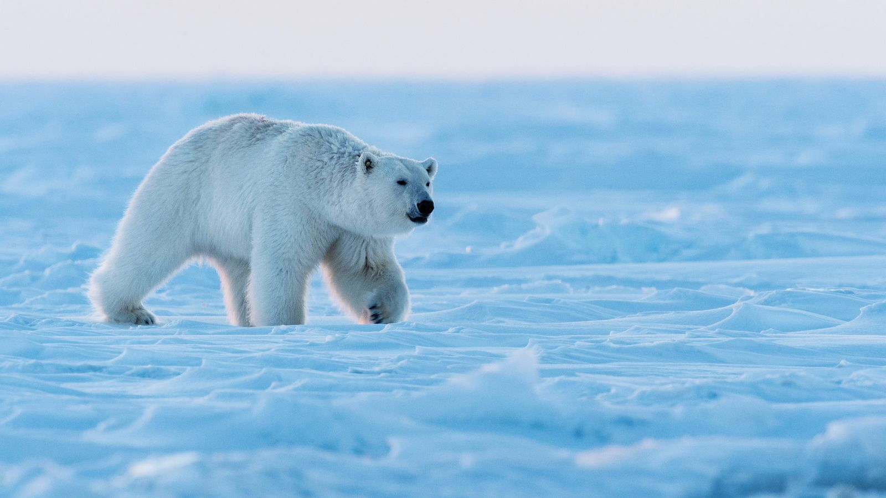

O Urso-polar (Ursus maritimus), também chamado de urso-branco, é o maior carnívoro terrestre e o maior urso, junto com o urso-de-kodiak. Ele habita o círculo polar Ártico e possui adaptações morfológicas para o frio, neve e gelo, além de ser especializado na caça de focas, que compõem a maior parte de sua dieta. Classificado como "vulnerável" pela IUCN, o urso-polar enfrenta ameaças como o desenvolvimento industrial, contaminação por poluentes, caça excessiva e impactos da mudança climática em seu habitat. Por séculos, o urso-polar tem sido central na cultura e tradições dos povos indígenas do Ártico, aparecendo em lendas e contos desses povos.
O Urso-polar é encontrado no círculo polar ártico e regiões continentais adjacentes, incluindo áreas da Dinamarca (Groenlândia), Noruega (Svalbard), Rússia, Estados Unidos (Alasca) e Canadá. Sua distribuição é limitada ao norte pelo gelo marinho e ao sul por regiões onde o gelo se forma no inverno, chegando até ilhas como St. Matthew, Pribilof, baía de James e Terra Nova. Os pesquisadores começaram a estudar a estrutura das populações de urso-polar nas décadas de 1960 e 1970, identificando sua dispersão pelo Ártico. Em 1993, durante uma reunião do "Polar Bear Specialist Group" da IUCN, foi formalizada a primeira tabela oficial reconhecendo quinze subpopulações. Em 2009, o número de subpopulações reconhecidas aumentou para dezenove. Estes grupos são geneticamente similares e não há evidências de que tenham evoluído separadamente por períodos significativos de tempo.
O Urso polar é um animal solitário na maior parte de seu tempo de vida. Somente no período de reprodução, eles vivem de forma coletiva. A área de vida pode variar, podendo chegar a até 950 mil quilômetros quadrados. O tamanho da área pode ser influenciada pelas fêmeas e seus filhotes, exigindo assim um espaço maior.

Ordem: Carnivora
Família: Ursidae
Gênero: Ursus
Espécie: Ursus maritimus